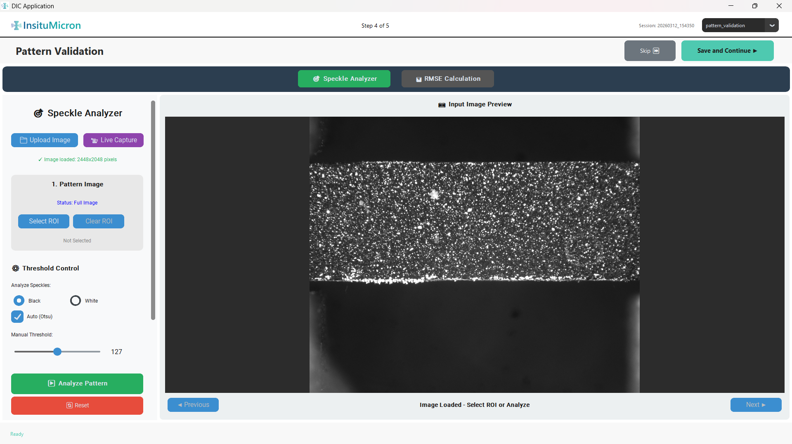
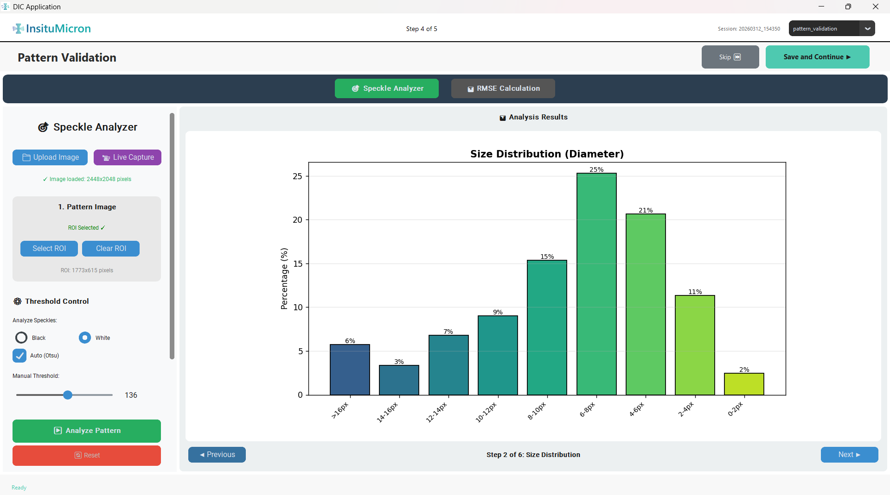
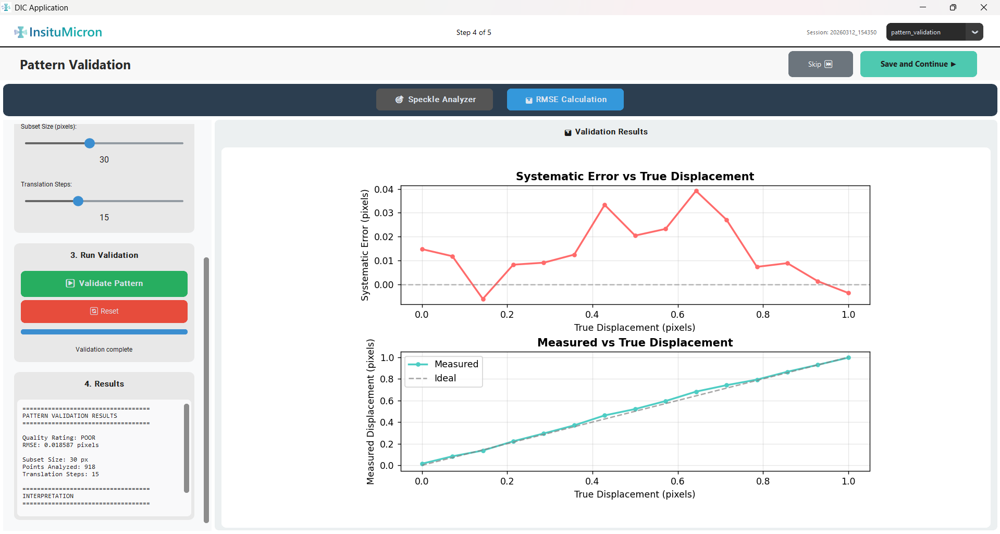

Module 4
Pattern Validation
Checks the quality of the speckle pattern applied to your specimen surface. A properly prepared speckle pattern is essential for accurate DIC tracking. This module has two sub-modes: the Speckle Analyzer and the RMSE Noise Calculator.

[Screenshot: Pattern Validation screen with mode toggle bar at top]
'">
Figure 4.1 — Pattern Validation module with sub-mode toggle buttons
4.1 Mode Toggle Bar
Two buttons at the top of the screen switch between the two sub-modes. Only one sub-mode is active at a time.
| Button | Sub-Mode | Description |
|---|
| Speckle Analyzer (green) | Section 4.2 | Analyzes the speckle pattern on the specimen: measures coverage percentage, mean dot size, size distribution, and derives subset size recommendations. |
| RMSE Calculation (blue) | Section 4.3 | Computes the image noise level (Root Mean Square Error) by comparing two images of the undeformed specimen. This gives the baseline measurement noise floor. |
The currently active sub-mode button appears brighter/highlighted. Click either button at any time to switch — no data is lost when switching between sub-modes.
4.2 Sub-Mode: Speckle Analyzer
This sub-mode automatically detects and measures all speckle dots in your image. It produces numerical metrics and charts describing the pattern quality.
Left Sidebar — Controls
| Control | Description |
|---|
| Upload Image (button) | Loads a new image file for speckle analysis. The application automatically loads the first image from the Acquisition module by default. Use this button only if you want to analyze a different image. |
| Live Capture (purple button) | Opens an embedded camera capture dialog to acquire a live speckle image for immediate analysis. |
| Image status label | Shows "✓ Image loaded: W×H pixels" in green when an image is available; "✗ No image" in red otherwise. |
| Select ROI (button) | Draw a rectangular region of interest on the right-panel canvas. Only the content within the ROI will be analyzed. This is useful when the specimen occupies only part of the image frame. |
| Clear ROI (button) | Removes the active ROI and returns to full-image analysis. Disabled until an ROI has been set. |
| Analyze Speckles: Black / White (radio buttons) | Select the color of your speckle dots. Black: dark speckles on a light background (most common). White: light speckles on a dark background. This determines the binarization direction used internally. |
| Auto (Otsu) checkbox | When ticked (default recommended), the application uses Otsu's method to automatically determine the optimal binarization threshold. This adapts to variations in image brightness and contrast. Untick to set the threshold manually. |
| Manual Threshold slider (0–255) | Active only when the Auto checkbox is unticked. Drag to set the pixel intensity cutoff that separates speckle dots from the background. Useful when automatic detection produces incorrect results due to uneven lighting. |
| Analyze Pattern (large green button) | Runs the full speckle detection and analysis. May take 1–10 seconds depending on image size and speckle count. Disabled if no image is loaded. |
| Reset (red button) | Clears all analysis results and overlays. The loaded image is retained. |
Analysis Results (Left Panel — Bottom)
After clicking Analyze Pattern, the results section at the bottom of the left panel fills with metrics:

[Screenshot: Results text box showing coverage, size, and quality metrics]
'">
Figure 4.2 — Speckle analysis results box
| Result Field | Description | Target / Notes |
|---|
| Coverage % | Percentage of the analyzed area (or ROI) covered by speckle dots. | Ideal range: 25–50%. Below 25%: too sparse; above 50%: too dense. |
| Total Speckles | The total number of individual speckle dots detected within the analysis area. | — |
| Mean Diameter (px) | The average equivalent diameter of detected speckle dots in pixels. | Aim for 3–7 px mean diameter. Speckles smaller than 2 px are too small for reliable tracking. |
| Dominant Size Range | The speckle size range (e.g., 4–6 px) containing the most dots. | — |
| Quality Rating | An overall assessment: Optimal, Low density, High density, or Poor. | Aim for Optimal before proceeding. |
| Size Distribution table | Percentage of speckles falling into each size bin: <2 px, 2–4 px, 4–6 px, 6–8 px, 8–12 px, 12–16 px, >16 px. | Large speckles (>16 px) may indicate paint clumping or over-spraying. |
| Subset Size Recommendations | Suggested DIC subset sizes derived from your mean speckle diameter. Typically 3–5× the mean diameter. | Use these values as starting points for the DIC Analysis module settings. |
Result Navigation (Bottom of Right Panel)
After analysis, the right panel cycles through multiple visual result views using navigation buttons:
| Control | Description |
|---|
| ◀ Previous (button) | Cycle backward through result views. |
| Step label (center) | Shows the name of the current view (e.g., "Detected Speckles", "Binary Image", "Size Distribution Chart"). |
| Next ▶ (button) | Cycle forward through result views. |
If coverage is below 25%, spray another thin layer of black paint over the existing pattern. If coverage is above 50%, you may need to start over with a lighter speckle application on a freshly painted white base coat.
4.3 Sub-Mode: RMSE Calculation
The RMSE sub-mode quantifies the image noise of your camera-lens system by comparing two images taken under identical conditions with no specimen deformation. The resulting RMSE value represents the noise floor — the minimum detectable displacement your system can resolve above random intensity noise.

[Screenshot: RMSE Calculation sub-mode screen]
'">
Figure 4.3 — RMSE Calculation sub-mode
RMSE stands for Root Mean Square Error. In this context it measures the pixel-level intensity difference between two images that should be identical. A high RMSE indicates noisy images or vibration issues in the imaging setup.
Controls & Procedure
| Control | Description |
|---|
| Load Image 1 (button) | Load the first reference image (one exposure taken with no load applied to the specimen). |
| Load Image 2 (button) | Load the second reference image (a second exposure taken immediately after the first, with no movement or loading). |
| Select ROI (button) | Restrict the RMSE calculation to a specific region of the images (e.g., only the speckled area of the specimen). |
| Calculate RMSE (green button) | Computes the statistical difference between the two images in the selected region. Results appear below. |
| RMSE value (result label) | The computed RMSE in gray-level intensity units. Lower is better. Typical well-configured setups: <1.0. Values >3.0 suggest significant noise or vibration. |
Procedure for RMSE measurement:
Without applying any load, take two sequential images of the specimen in the exact same position.
Load Image 1 and Image 2 using the respective buttons.
Optionally draw an ROI over the speckled region only, to exclude background areas.
Click Calculate RMSE. Review the resulting value.
If RMSE is unexpectedly high (>2.5 intensity units), investigate: check for camera vibration from nearby equipment, air currents causing speckle movement, or short exposure times combined with high ISO causing sensor noise. Address the root cause before proceeding.